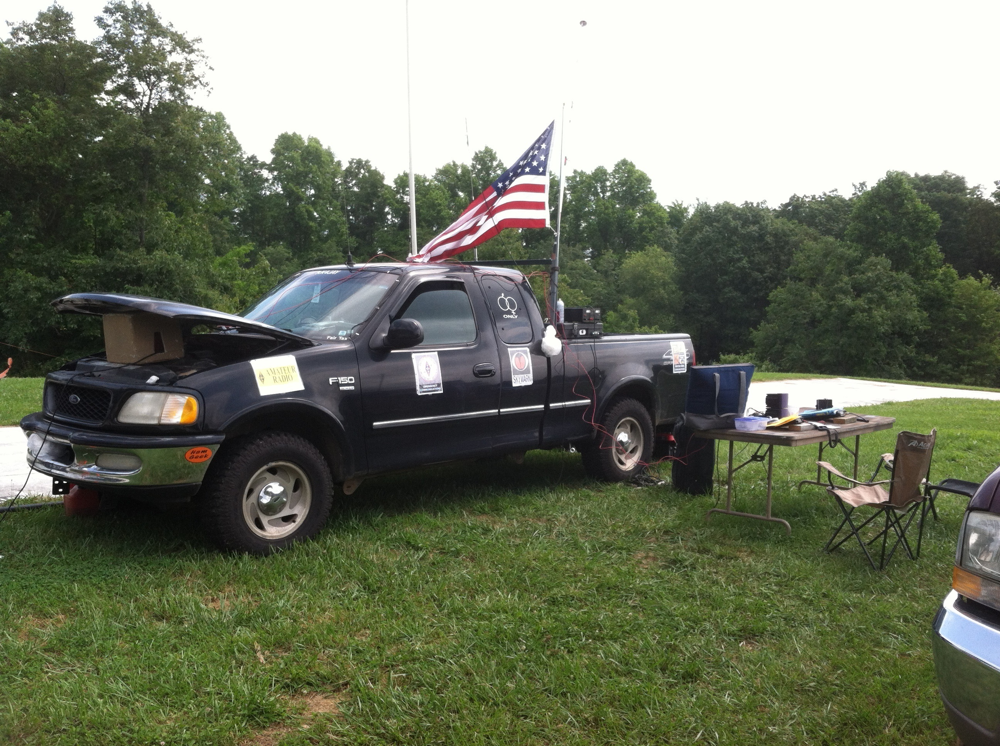

7:00 P.M. EST at Guthrie's Restaurant
Thursday 7:00 P.M. EST
146.535 MHz Simplex
The Amateur Radio Emergency Service® (ARES) consists of licensed amateurs who have voluntarily registered their qualifications and equipment, with their local ARES leadership, for communications duty in the public service when disaster strikes.
This was our first Field Day as an ARES group. Most local ARES members participated. We set up at Cloudland Canyon State Park on Lookout Mountain. It was a perfect spot for antennas and public relations. We estimate 150 to 200 members of the public stopped by to check out what we were doing. The manager and rangers of the state park could not have been more helpful or gracious. We give them our thanks.
Operators learned to set up and operate under emergency conditions. There was even a contact with the International Space Station.
Special thanks to Dade County Sheriff Ray Cross and Community Resources Officer Joseph Chambers for their support on Field Day.
